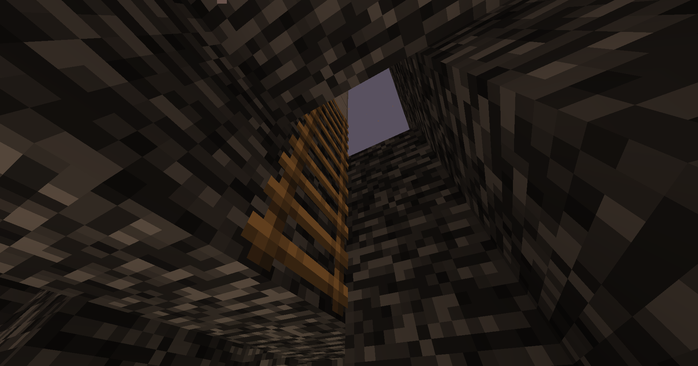
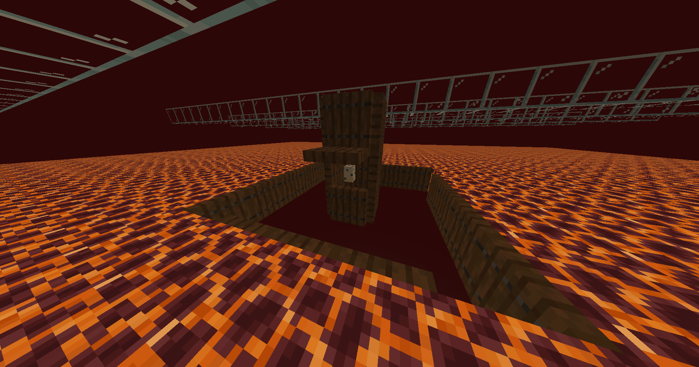
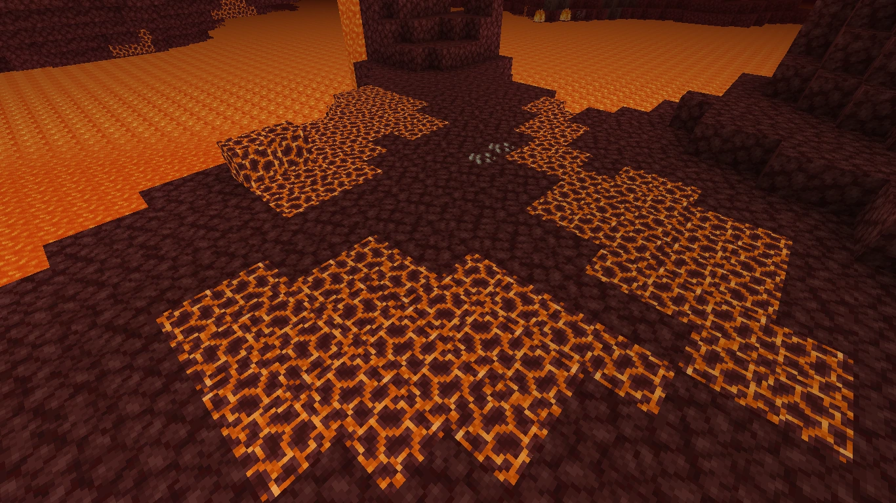
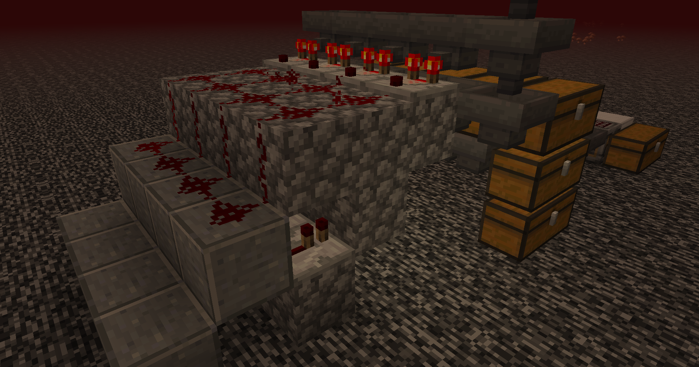
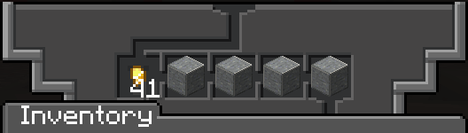
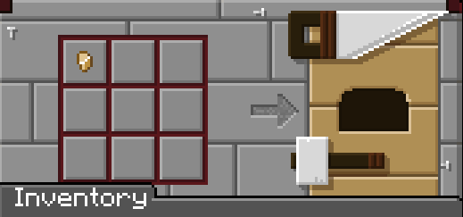
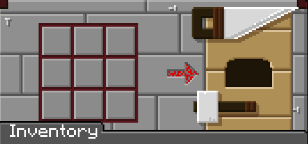
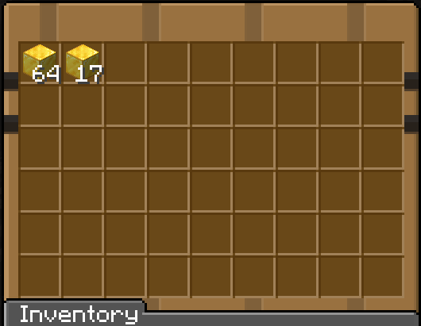

Las granjas de oro suelen ser de las más importantes, sobre todo para realizar comidas como zanahorias doradas y manzanas doradas. Ahora veremos cómo fue el proceso para crear esta granja.
Cosas fundamentales
Ingresar al techo del Nether
Suena bastante raro, pero es posible romper la bedrock para acceder al techo del Nether. Es fundamental, ya que en el techo del Nether podremos controlar el spawn de los mobs y así hacer la granja de oro gracias a los zombis pigman.

Conseguir un huevo de tortuga
El huevo de tortuga es una de las piezas más importantes de esta granja, ya que será el que atraiga a los mobs a la caída. Los mobs, al detectar que hay un huevo de tortuga, querrán ir a romperlo.

Buscar Nether Wastes
Una vez estemos en el techo del Nether, tenemos que buscar un bioma de Nether Wastes, ya que en este bioma es donde aparecen con más frecuencia los zombis pigman. Nos podemos apoyar usando el F3.
Conseguir bloques de magma
Con estos bloques construiremos la plataforma principal de aparición de los zombis pigman. Al usar estos bloques, podemos evitar la aparición de otros mobs que no nos interesan para la granja de oro.

¿Cómo funciona?
Luego de crear la granja, la idea es subir a la capa 255, o sea, el límite de construcción permitido. Una vez aquí, estaremos forzando la aparición de mobs en la plataforma de bloques de magma. Luego, los zombis querrán romper el huevo de tortuga, así que caerán por el agujero del medio hasta la zona de almacenamiento.
Recolección
Filtros
Para esta granja de oro utilizaremos filtros con los cuales podremos recoger solamente las pepitas de oro que sueltan los zombis pigman.

Funcionamiento del filtro
Luego de armar el mecanismo de redstone, simplemente en las tolvas colocaremos el objeto que queremos filtrar.

Creación de lingotes
Luego de que pasen por el filtro, las pepitas pasarán al fabricador, que se encargará de fabricar los lingotes.

Creación de bloques
Después de conseguir los lingotes, estos se usarán en un fabricador para fabricar los bloques de oro, lo que facilitará el almacenamiento de objetos.

Resultados
Esta granja genera alrededor de 270 lingotes por hora, pero al ser modular, se pueden crear más módulos para generar aún más lingotes y bloques de oro.

¿Cómo construir?
Si quieres construir esta granja de oro, puedes hacerlo siguiendo el tutorial de MartiniumMC.